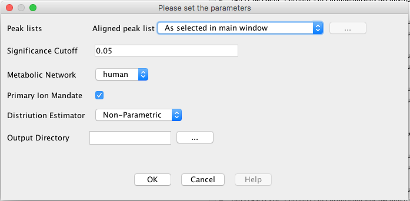

Mummichog Calculation
Description
Mummichog is an algorithm for analyzing data from high throughput, untargeted metabolomics. It leverages the organization of metabolic networks to predict functional activity directly from feature tables, bypassing metabolite identification. Thus, high-quality hypotheses can be quickly generated from a LC-MS data table. The algorithm runs on the Aligned peak lists and performs Modular and Pathway analysis using an existing Human or Worm metabolical networks. The calculation edits the aligned peak list with addition in compound information against each mz-retion_time row. The calculation also prpduces three csv files which have the list of empirical compunds, top modules from modular analysis and the results from pathway analysis.
The algorithm was first developed in python. For more information visit the below link.
http://mummichog.org/
./
Method parameters
- Significance Cutoff
- This option defines Significance cutoff p-value as a threshold for input file values.
- Metabolic Network
- This drop down option lets user to chose a base metabolic network on basis of which the calculation is done. The algorithm supports Human and Worm metabolic network in current version.
- Primary Ion Mandate
- The check box option lets user specify if they want to enforce presence of primary ion while creating empirical compounds.
- Distribution Estimator
- This drop down option lets user to chose between Non-Parametric and Gamma Distribution to fit the generated data points.
- Ion Mode
- This drop down option lets user choose between default positive and negative ions.
The default positive ions are "M[1+]", "M+H[1+]", "M+2H[2+]", "M(C13)+H[1+]", "M(C13)+2H[2+]", "M+Na[1+]", "M+H+Na[2+]", "M+HCOONa[1+]"
The default negative ions are "M-H[-]", "M-2H[2-]", "M(C13)-H[-]", "M(S34)-H[-]", "M(Cl37)-H[-]", "M+Na-2H[-]", "M+K-2H[-]", "M-H2O-H[-]", "M+Cl[-]","M+Cl37[-]", "M+Br[-]", "M+Br81[-]", "M+ACN-H[-]", "M+HCOO[-]", "M+CH3COO[-]", "M-H+O[-]"
- Output Directory
- Select the Output directory for generated csv files